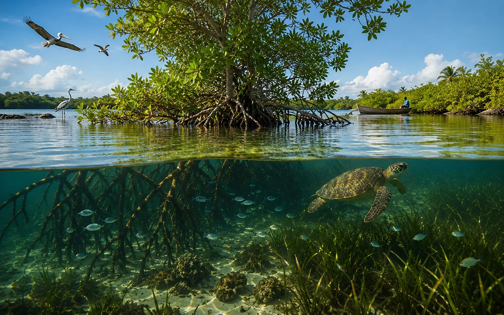

Présentation
Rendre les écosystèmes littoraux plus compréhensibles
Le programme favorise la vulgarisation, la sensibilisation et la documentation sur les lagunes, les mangroves, la biodiversité et les services rendus par les milieux côtiers.
Programme
Un programme pour sensibiliser aux écosystèmes littoraux et lagunaires, avec une attention particulière aux mangroves, à la biodiversité et aux milieux fragiles.
Présentation
Le programme favorise la vulgarisation, la sensibilisation et la documentation sur les lagunes, les mangroves, la biodiversité et les services rendus par les milieux côtiers.

Informer sur les milieux fragiles, encourager la protection et faciliter l'accès à des ressources pédagogiques validées.
Citoyens, jeunes, enseignants, associations, communautés littorales, institutions et contributeurs spécialisés.
Fiches pédagogiques, contenus de vulgarisation, documentation publique et appui à des actions confirmées.
Fiche lagunes, fiche mangroves, fiches littorales, ressources Observatoire et documents institutionnels.
Les experts, enseignants et citoyens peuvent proposer des références publiques ou des sujets de fiches pédagogiques.
Le programme privilégie les repères pédagogiques publics et les informations adaptées à la sensibilisation.
Une contribution peut porter sur une ressource, une relecture, une proposition pédagogique ou une coopération validable.
Dernière mise à jour : juin 2026